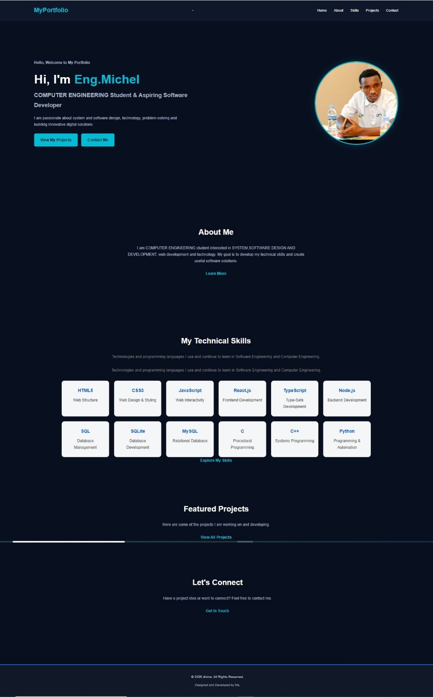
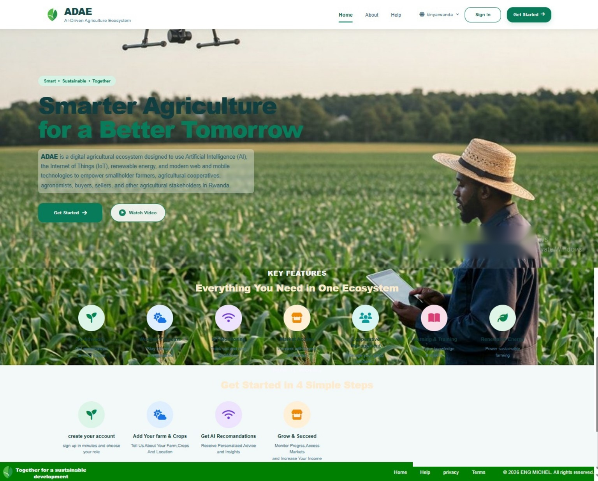
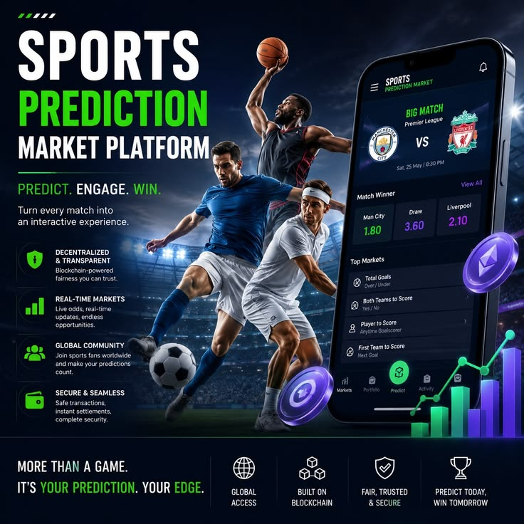

01
MY WORK & EXPERIENCE
Welcome to my project portfolio. Here, I showcase my practical work, programming experiments and technical projects as I continue developing my skills in Software Engineering and Computer Engineering. Every project represents an opportunity to learn, solve problems and grow.
A selection of projects that demonstrate my technical knowledge, creativity and continuous learning.

Web Development
A personal portfolio website designed to showcase my skills, background, projects and journey as an aspiring Software Engineer.
Status: In Progress

AI & Agriculture Technology
An AI-Driven Agriculture Ecosystem designed to transform modern farming through Artificial Intelligence, Internet of Things and smart agricultural technologies. The project focuses on smart irrigation, soil monitoring, agricultural drones and data-driven farming decisions.
Status: Prototype & Development

Sports Technology & Software
A sports analytics software project focused on exploring how software engineering and data analysis can be used to understand sports performance and generate meaningful insights. The project aims to develop technology-driven solutions for sports intelligence.
Status: Project Development
My approach to software development focuses on understanding problems and creating practical solutions.
Understanding the problem, defining requirements and planning the project structure.
Writing clean code, implementing features and applying engineering principles.
Testing functionality, identifying errors and improving the quality of solutions.
I am always interested in learning, collaborating and exploring new opportunities in technology. Let's connect and build something meaningful.
Contact Me